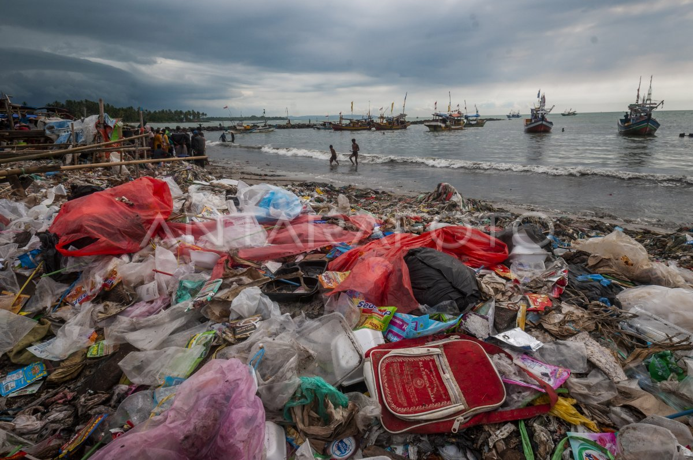
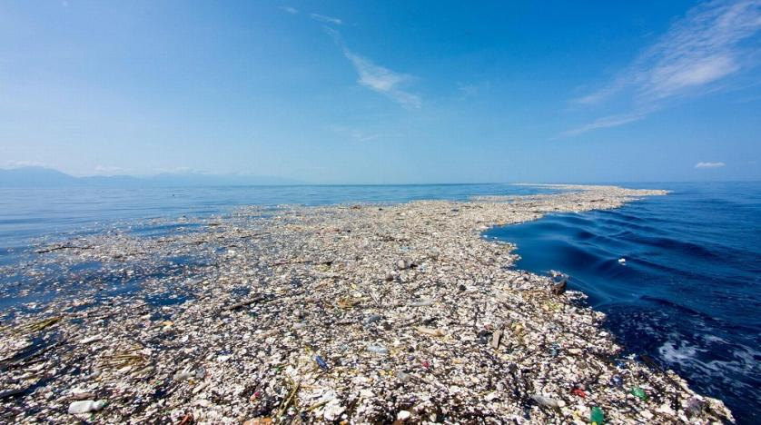
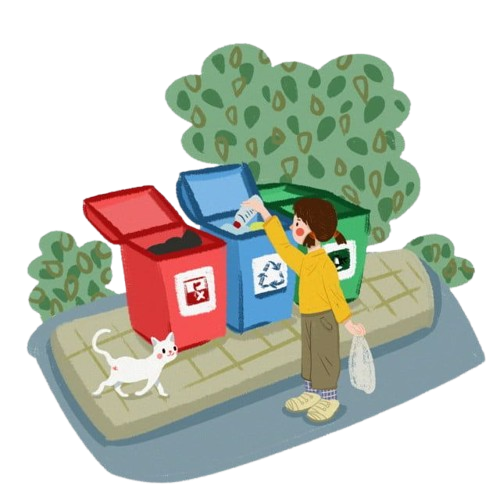
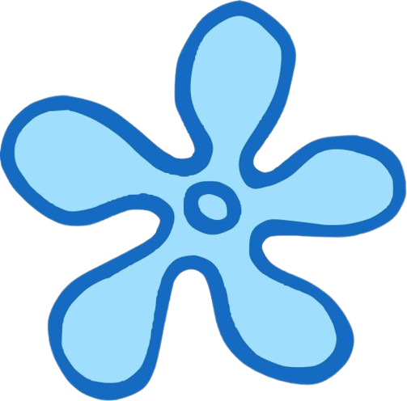
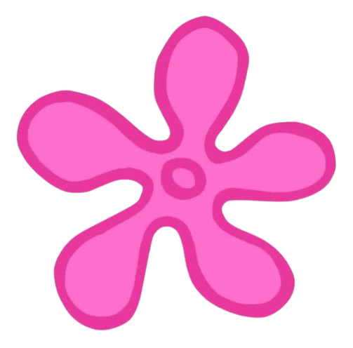
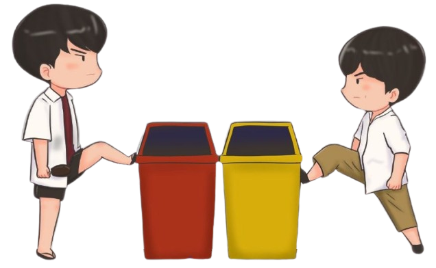
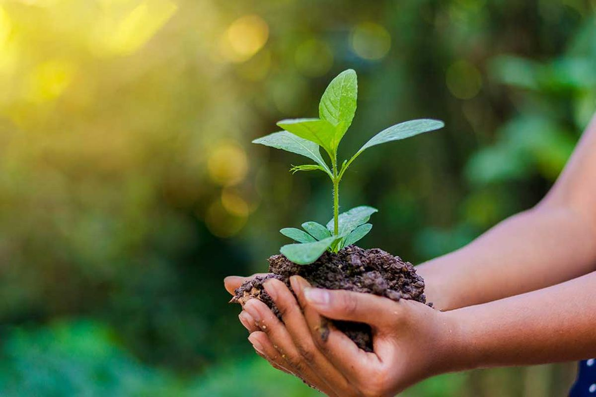
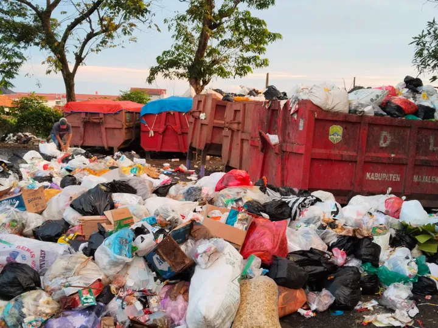
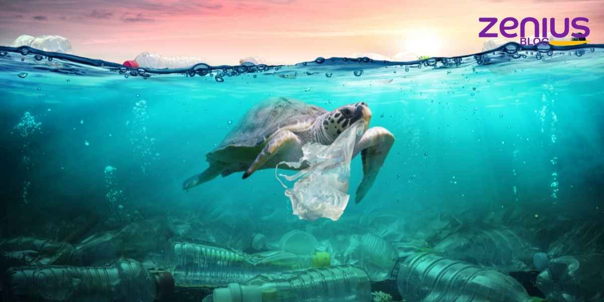
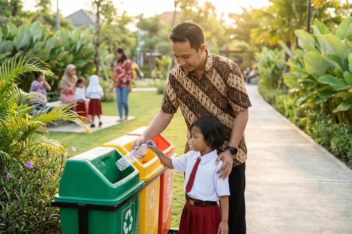

Pencemaran lingkungan adalah kondisi ketika lingkungan mengalami perubahan akibat masuknya zat, benda, atau energi yang dapat mengganggu keseimbangan alam dan kehidupan makhluk hidup. Pencemaran dapat terjadi di berbagai tempat, seperti udara, air, dan tanah. Salah satu penyebab utama pencemaran adalah aktivitas manusia yang menghasilkan limbah dan tidak dikelola dengan baik. Contohnya adalah asap kendaraan yang mencemari udara, limbah industri yang mencemari air, serta banyak sampah yang dibuang sembarangan. Jika terus dibiarkan, pencemaran ini dapat merusak ekosistem dan mengurangi kualitas lingkungan tempat manusia dan makhluk hidup lainnya tinggal.


Pencemaran lingkungan sering kali terjadi karena kebiasaan sederhana yang dianggap tidak memiliki dampak besar. Membuang satu bungkus makanan sembarangan mungkin terlihat sepele, tetapi jika dilakukan oleh banyak orang secara terus-menerus, jumlah sampah yang dihasilkan dapat menjadi sangat besar. Sampah yang tidak dikelola dengan baik juga dapat berpindah dari satu tempat ke tempat lain. Sampah di jalan dapat terbawa air hujan menuju selokan, sungai, dan akhirnya sampai ke laut. Oleh karena itu, pencemaran lingkungan bukan hanya masalah di tempat sampah berada, tetapi dapat menjadi masalah yang lebih luas bagi seluruh ekosistem.



Kebiasaan membuang sampah sembarangan membuat sampah menumpuk dan mencemari lingkungan.
Plastik sekali pakai sulit terurai sehingga jumlahnya terus bertambah di lingkungan.
Kegiatan industri dapat menghasilkan limbah yang tidak dikelola dengan baik.
Aktivitas kendaraan menghasilkan polusi dan berbagai jenis limbah yang dapat mencemari lingkungan.
Semakin banyak barang yang digunakan dan dibuang, semakin banyak pula sampah yang dihasilkan.
Sampah rumah tangga seperti sisa makanan dan kemasan menjadi salah satu sumber sampah sehari-hari.
Sampah di jalan dan selokan dapat terbawa air hujan menuju sungai hingga akhirnya ke laut.
Sampah yang tidak dipilah, dikurangi, atau didaur ulang akan lebih mudah menumpuk.
Bayangkan sebuah botol plastik yang sudah selesai digunakan lalu dibuang sembarangan. Ketika hujan turun, botol tersebut dapat terbawa air menuju selokan. Dari selokan, botol dapat masuk ke sungai dan mengikuti aliran air. Perjalanan tersebut dapat berlanjut hingga botol akhirnya mencapai laut. Sesampainya di laut, botol dapat mengapung, terbawa arus, atau pecah menjadi bagian-bagian yang lebih kecil.
Perjalanan sampah dari daratan menuju laut benar-benar dapat terjadi di kehidupan nyata. Salah satu contohnya terjadi di kawasan pesisir Muara Angke, Jakarta Utara, pada Juni 2026. Tumpukan sampah yang menyerupai “pulau sampah” ditemukan di kawasan tersebut. Dalam proses pembersihannya, sekitar 8,8 ton sampah berhasil diangkut. Peristiwa ini memperlihatkan bahwa sampah yang berasal dari daratan dapat berpindah dan akhirnya menumpuk di kawasan pesisir.
Pencemaran lingkungan dapat memberikan dampak yang besar terhadap biodiversitas laut. Sampah plastik yang masuk ke laut dapat menjadi ancaman bagi berbagai jenis hewan laut. Hewan dapat mengira plastik sebagai makanan sehingga sampah tersebut dapat masuk ke dalam tubuh mereka. Selain itu, hewan juga dapat terjerat oleh kantong plastik, tali, jaring, atau benda lainnya yang berada di laut. Pencemaran air juga dapat mengganggu habitat tempat organisme laut mencari makanan, berkembang biak, dan berlindung. Jika kondisi tersebut terus terjadi, keseimbangan ekosistem laut dapat ikut terganggu.
Dampak pencemaran laut juga dapat dirasakan oleh manusia. Laut menyediakan makanan, sumber penghasilan, dan berbagai sumber daya yang penting bagi kehidupan manusia. Banyak masyarakat pesisir yang bergantung pada laut untuk kegiatan seperti perikanan dan pekerjaan lainnya. Ketika laut tercemar, lingkungan tempat mereka mencari penghasilan juga dapat mengalami perubahan. Pencemaran juga dapat mengganggu kualitas sumber daya laut yang dimanfaatkan oleh manusia. Oleh karena itu, menjaga kebersihan laut bukan hanya berarti melindungi hewan dan tumbuhan, tetapi juga menjaga kehidupan manusia yang bergantung pada laut.
Masalah pencemaran lingkungan memang besar, tetapi kita tidak harus menunggu sampai bisa melakukan sesuatu yang luar biasa. Perubahan dapat dimulai dari kebiasaan sederhana yang kita lakukan setiap hari. Salah satu cara yang dapat dilakukan adalah menerapkan prinsip 3R, yaitu Reduce, Reuse, dan Recycle. Ketiga prinsip ini membantu kita mengurangi jumlah sampah dan menggunakan sumber daya dengan lebih bijak. Dengan menerapkannya, barang tidak langsung dianggap sebagai sesuatu yang harus dibuang setelah selesai digunakan. Hal kecil yang dilakukan secara konsisten dapat membantu menciptakan lingkungan yang lebih bersih.
START WITH ONE SMALL CHOICE TODAY. 🌱




